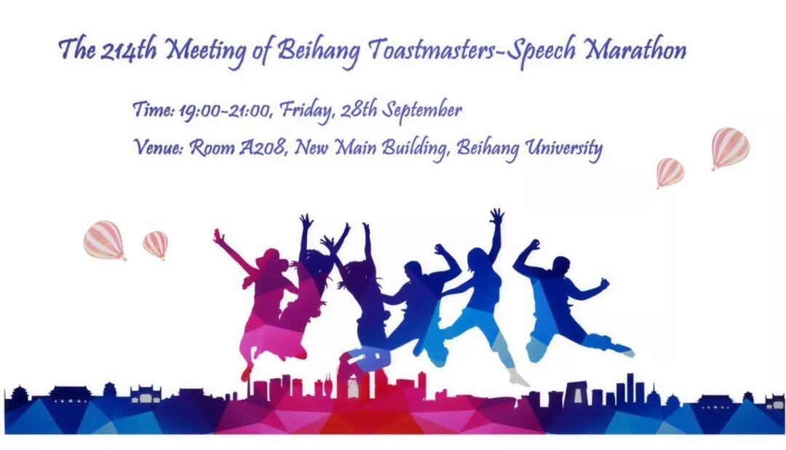

As a professional Toastmasters Club, we always forcus on our members's growth.
So, on September 28th, we will hold a special meeting -- Speech Marathon. In this meeting, we will not have Table Topic Session, what's instead is 6prepared speeches ,6 individual evaluations and 2 General evaluators, which will defenitely bring you a fresh and new audio-visual feast.

Time: 19:00-21:00, Friday, 28th September
Venue: Room A208, New Main Building, Beihang University
Beihang Toastmasters Club is a students' union.
At the same time, we belong to a non-profit international organization called Toastmasters International.
Toastmasters International (TI) is a non-profit educational organization that operates clubs worldwide for the purpose of helping members improve their communication, public speaking, and leadership skills. You can find us by the following map of Beihang University.

原文链接（公众号关闭后可能失效）：
https://mp.weixin.qq.com/s/jPz2Vx0LZOfV6IPk0o5EkA
https://mp.weixin.qq.com/s/jPz2Vx0LZOfV6IPk0o5EkA
第 490/539 篇 · 北航Toastmasters英文演讲俱乐部公众号存档
本页为抢救式本地归档，图文已永久保存。
本页为抢救式本地归档，图文已永久保存。